A very important task in microwave design (especially for amplifiers) is the question, whether the circuit tends to unwanted oscillations. A two-port oscillates if, despite of no signal being fed into it, AC power issues from at least one of its ports. This condition can be easily expressed in terms of RF quantities, so a circuit is stable if:
| 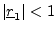 and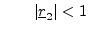 | (1.39) |
with 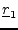 being reflexion coefficient of port 1 and 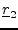 the one of port 2.
A further question can be asked: What conditions must be fulfilled to have a two-port be stable for all combinations of passive impedance terminations at port 1 and port 2? Such a circuit is called unconditionally stable. [3] is one of the best discussions dealing with this subject.
A circuit is unconditionally stable if the following two relations hold:
| 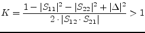 | (1.40) |
| 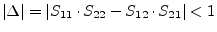 | (1.41) |
with  being the determinant of the S parameter matrix of the
two port.
being the determinant of the S parameter matrix of the
two port.  is called Rollet stability factor. Two relations must
be fulfilled to have a necessary and sufficient criterion.
is called Rollet stability factor. Two relations must
be fulfilled to have a necessary and sufficient criterion.
A more practical criterion (necessary and sufficient) for
unconditional stability is obtained with the  -factor:
-factor:
| 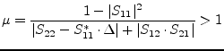 | (1.42) |
Because of symmetry reasons, a second stability factor must exist that also gives a necessary and sufficient criterion for unconditional stability:
| 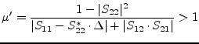 | (1.43) |
For conditional stable two-ports it is interesting which which load and which source impedance may cause instability. This can be seen using stability circles [4]. A disadvantage of this method is that the radius of the below-mentioned circles can become infinity. (A circle with infinite radius is a line.)
Within the reflexion coefficient plane of the load (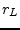-plane), the stability circle is:
| 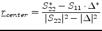 | (1.44) |
| Radius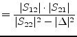 | (1.45) |
If the center of the -plane lies within this circle and 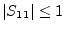 then the circuit is stable for all reflexion coefficients inside the circle. If the center of the -plane lies outside the circle and then the circuit is stable for all reflexion coefficients outside the circle.
Very similar is the situation for reflexion coefficients in the source plane (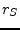-plane). The stability circle is:
| 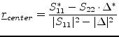 | (1.46) |
| Radius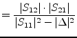 | (1.47) |
If the center of the -plane lies within this circle and 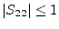 then the circuit is stable for all reflexion coefficients inside the circle. If the center of the -plane lies outside the circle and then the circuit is stable for all reflexion coefficients outside the circle.
Maximum available and stable power gain (only for unconditional stable 2-ports) [4]:
| 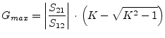 | (1.48) |
The (bilateral) transmission power gain of a two-port can be split into three parts [4]:
| 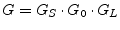 | (1.49) |
with
| 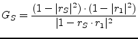 | (1.50) |
| 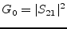 | (1.51) |
| 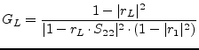 | (1.52) |
where 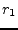 is reflexion coefficient of the two-port input.
The curves of constant gain are circles in the reflexion coefficient plane. The circle for the load-mismatched two-port with gain 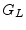 is
| 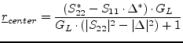 | (1.53) |
| Radius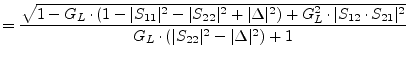 | (1.54) |
The circle for the source-mismatched two-port with gain 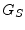 is
| 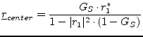 | (1.55) |
| Radius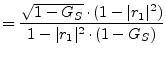 | (1.56) |
| 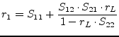 | (1.57) |
The available power gain 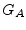 of a two-port is reached when the load is conjugately matched to the output port. It is:
| 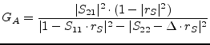 | (1.58) |
| 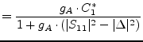 | (1.59) | |
| 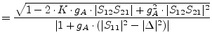 | (1.60) |
The operating power gain 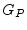 of a two-port is the power delivered to the load divided by the input power of the amplifier. It is:
| 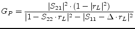 | (1.61) |
| 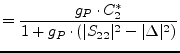 | (1.62) | |
| 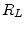 | 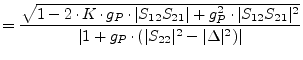 | (1.63) |
Obtaining concurrent power matching of input and output in a bilateral
circuit is not such simple, due to the backward transmission  .
However, in linear circuits, this task can be easily solved by the
following equations:
.
However, in linear circuits, this task can be easily solved by the
following equations:
| 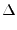 | 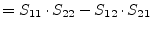 | (1.64) |
| 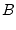 | 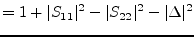 | (1.65) |
| (1.66) | ||
| (1.67) |
Here is the reflexion coefficient that the circuit needs to see at the input port in order to reach concurrently matched in- and output. For the reflexion coefficient at the output the same equations hold by simply changing the indices (exchange 1 by 2 and vice versa).